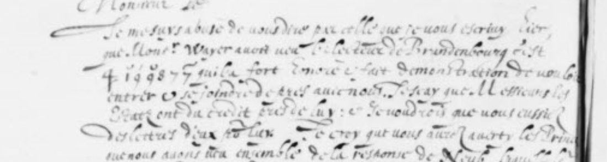
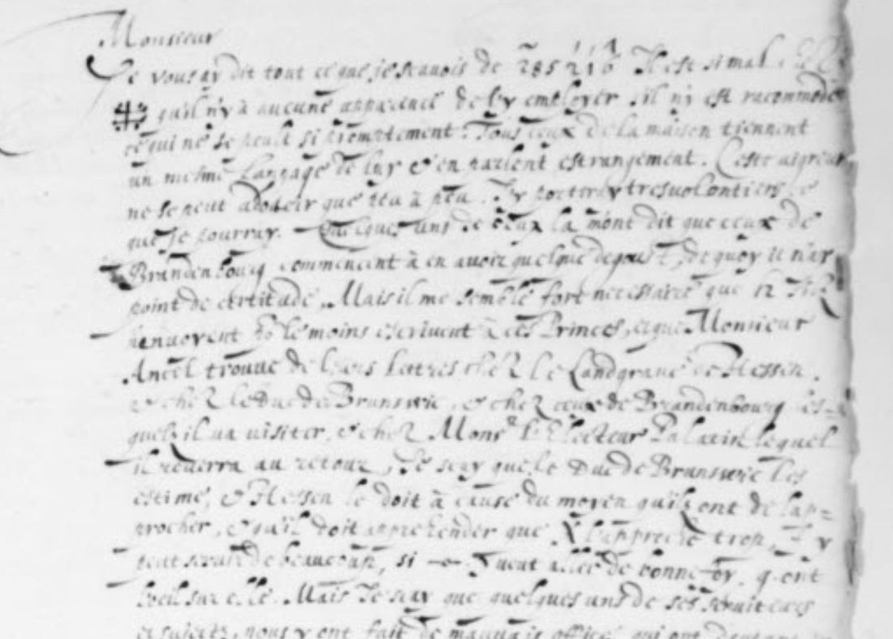
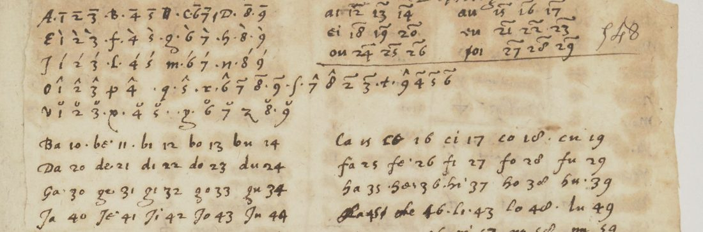
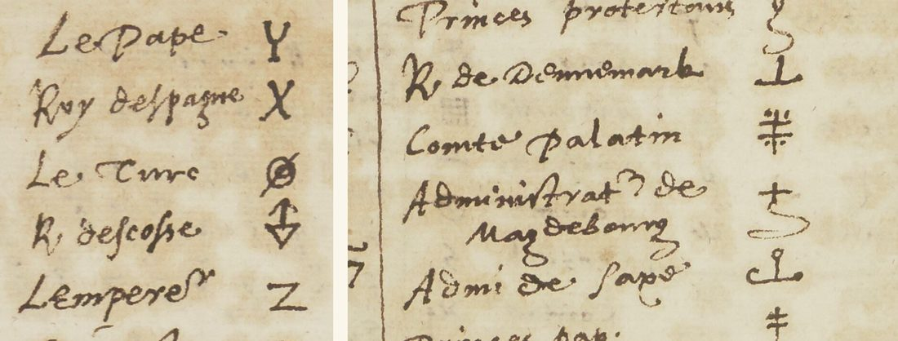
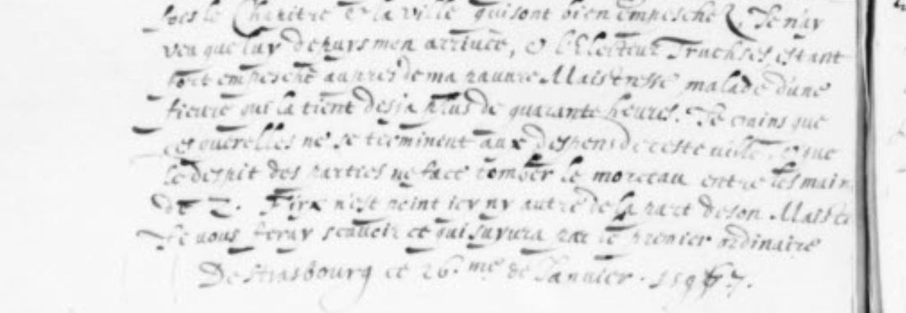

At a glanceExternal key matched · partial (44% of the cipher)
- The letters
- Two letters of Jacques Bongars, neither with a named correspondent, both dated Strasbourg, 26 January 1597, as copied into his letter-book. The French is in clear; nine names are in cipher.
- Where
- Burgerbibliothek Bern, Cod. B 149 (A) 451 (f. 360r) and 452 (f. 360v). Catalogued as “Personenangaben verschlüsselt”. Not on DECODE.
- The cipher
- Signs and capital letters for names, single digits with marks for letters, two-digit figures for syllables. Each of the nine groups occurs once.
- How it was deciphered
- With a cipher table in Bongars’s papers, BnF fr. 7131 f. 548, found here to fit. It gives four groups; two of them agree with readings made from context before the table was opened.
- What it says
- Hesse must fear that the King of Spain comes too close; it was Brunswick, not the Elector of Brandenburg, who received Monsieur Wayer; at Strasbourg the prize may fall to the Emperor.
- Credit
- Transcription and context readings by Brice Dudout, working with an AI agent (pull request #396). The table was matched by the project when the pull request was merged; S. Tomokiyo’s catalogue of Bongars’s ciphers pointed to it. The lead came from the project’s Swiss sweep.
- Still open
- Three groups are unread and two rest on context only. The catalogue image is 658 pixels wide, too small to tell the marks and small signs apart.
01 The letters
Cod. B 149 (A) in Bern is a letter-book: copies of Bongars’s letters in one secretary hand, not the letters that were sent. Items 451 and 452 are the two sides of one leaf, f. 360. Both letters are dated from Strasbourg on 26 January 1597, and the second begins by correcting “celle que je vous escrivis hier”. Neither letter names its correspondent, and they may not be to the same person. The first letter speaks of Monsieur Ancel in the third person; the second speaks of “l’affaire que vous traitez” and of “les Princes que nous avons veu ensemble”.

The text is French in clear, 513 words by count of the transcription. Nine names are replaced by cipher: six on f. 360r and three on f. 360v. Hermann Hagen’s catalogue of 1875 lists the two items as “Nescio cui. Strasb. 26 Janvier 1597” and “Item” and names no edition for them, as it does for some of their neighbours.
The project’s vetting of 9 November 2026 had closed this lead as not a cipher: a clear letter with about six signs for names. Brice Dudout, working with an AI agent, then transcribed both sides in full (no human palaeographer has checked the transcription) and proposed names for five of the nine groups from the context, with the levels of confidence fixed before he began. He did not have a cipher table.

02 The cipher table
Bongars’s own cipher tables are in Paris, in BnF fr. 7129 and fr. 7131. S. Tomokiyo catalogued them on Cryptiana in 2019 ; the three opened here are his nos 23, 28 and 29. Three were opened on Gallica for this page.
- f. 255v (no. 23, a clean copy of the cipher Tomokiyo dates to 1594). It has signs for names, and some look like the signs in the letters: an X with a dot is “Marquis d’Anspach”, a # is “Païs bas”. They give no sense here. Ruled out.
- f. 262r (no. 28). Letters are single digits with a stroke and names are figures under a tilde. Its names (Padre Paulo, Padre Fulgentio, Diodati) look later than 1597, which was not checked here, and the spelled group gives no word with it. Ruled out.
- f. 548r–v (no. 29). This one fits.

The table has five parts: the letters, as single digits with five kinds of mark; the syllables, as the figures 10 to 99; a short list of “Doubles” (pairs of letters such as br and dr); about 200 signs for common words; and the names. The names are the French court, the English court (Essex, Cecil, Norris, Buckhurst, Cobham), and princes, among them the Count Palatine and the Administrator of Magdeburg.

03 The nine groups
Grades follow the project’s convention: H is a value from a primary key source, I is inferred from context, M is uncertain.
| Group | On the leaf | Value | Grade | Basis |
|---|---|---|---|---|
| G1, f. 360r | a figure under a tilde, then digits with marks | unread | – | The spelled part of the table; the marks cannot be made out on the image. |
| G2, f. 360r | double cross with dots | unread | M | Nearest sign in the table: “Comte Palatin”, a barred cross with dots. A candidate only. |
| G3, f. 360r | 12 and a small sign | les Estats? | I | Context (Dudout). The table’s sign for “Les Estats” is h-shaped; not confirmed. |
| G4, f. 360r | X with a dot | Roy d’Espagne | H | Table. Dudout had proposed “the Spaniard” from context. |
| G5, f. 360r | small 4 with a bar | unread | M | Nearest sign: “Madame soeur du Roy”, a 4 with a cross-stroke, or the letter b. A candidate only. |
| G6, f. 360r | stroke with a loop | la Royne d’Angleterre? | I | Context (Dudout): “elle”, “ses serviteurs et sujets”. The table’s sign for the Queen is a long s; the leaf’s sign is nearer the table’s “Cte d’Essex” (a stroke with three loops). Not confirmed; the feminine “elle” keeps the Queen. |
| G7, f. 360v | 4 with a cross-stroke, then 1 9 9 8 7 7 with marks | Brunzvic (Brunswick) | H | Table: br, u, n, z, vi, c. Dudout’s candidate was the Administrator of Magdeburg. |
| G8, f. 360v | cross over an S-shaped tail | Administrateur de Magdebourg | H | Table. Dudout had restored “Cardinal de Lorraine” from context. |
| G9, f. 360v | Z with a bar | L’Empereur | H | Table. Dudout had restored “the House of Austria / the Emperor”. |
G7 is the one group that is spelled out. The first sign, a 4 with a cross-stroke, is “br” in the Doubles. Then 1 with a breve is u, 9 with an acute stroke is n, 9 with a breve is z, the bare 87 is the syllable vi, and 7 with a bar is c.

04 What the letters say
The first letter is about getting letters sent to the German princes whom Monsieur Ancel is visiting. The group that should send them is G3, most likely the States. Bongars writes that the Duke of Brunswick esteems them, and that Hesse ought to:
… et Hesse le doit à cause du moyen qu’ils ont de l’approcher, et qu’il doit appréhender que [le roi d’Espagne] l’approche trop.
… and Hesse should, because of the means they have to reach him, and because he must fear that [the King of Spain] comes too close to him.
The second letter opens with a correction, and the table supplies the name:
Je me suis abusé de vous dire, par celle que je vous écrivis hier, que Monsieur Wayer avait vu l’Électeur de Brandebourg. C’est [Brunswick] qui l’a fort honoré et fait démonstration de vouloir entrer et se joindre de près avec nous. Je sais que Messieurs les États ont du crédit près de lui.
I was wrong to tell you in my letter of yesterday that Monsieur Wayer had seen the Elector of Brandenburg. It is [Brunswick] who received him with great honour and showed a wish to join us closely. I know the States have credit with him.
This agrees with the first letter, where the name stands in clear: “Je scay que le Duc de Brunswic les estime”.
The rest of the second letter is about Strasbourg. A man who said he had come “pour la résignation” now only asks for 70,000 florins owed to his master and leaves the game to the deputy of the Administrator of Magdeburg, while threatening the Chapter and the town. Bongars fears the quarrel will end at the town’s expense, and that the parties’ spite will make the prize fall into the hands of the Emperor.
05 How far to trust the match
Four groups is little, and no control with a shuffled key is possible on so few. What supports the match is this. Dudout proposed his names from context alone. Three of them fall on groups the table gives. Two agree (the third, G8, does not; see below): he read G4 as the Spaniard and the table gives X as “Roy d’Espagne”; he read G9 as the House of Austria or the Emperor and the table gives Z as “L’Empereur”. The spelled group then gives a name that Bongars writes in clear in the other letter, in the same connection. The fourth, Magdeburg, turns a doubtful word before it into “deputé”.
The table also corrects the context reading twice. G8 is not the Cardinal of Lorraine, and G7 is not Magdeburg. For G3 and G6 the table neither confirms nor refutes the context: the signs on the leaf could not be matched to the table’s signs for the States and the Queen of England, so both keep grade I.
The weak point is the image. The Burgerbibliothek catalogue serves each leaf at 658 by 895 pixels, and the larger sizes it offers are enlargements of that picture. The marks over the digits of G7 were made out at the limit of what can be seen, and a larger scan could change a letter.
06 What remains open
- G1: unread. It names the person the first letter opens with, who is on bad terms with G2 and whom “ceux de Brandebourg” are tiring of. The marks over its digits are not legible.
- G2 and G5: unread. Each occurs once, and at this image size neither can be told apart from two or three signs of the table. Candidates, grade M: “Comte Palatin” for G2, “Madame soeur du Roy” for G5.
- G3 and G6: from context only, grade I.
- Three words of the clear text are doubtful (“deputé”, “ma” or “sa”, the name “Firx”), and one verb (“l’apprecie”, taken as “l’approche”).
- R. Kohlndorfer-Fries, Diplomatie und Gelehrtenrepublik (2009), which lists Bongars’s letters, was not checked; it is a printed book with no online text.
- The table’s signs for common words, about 200, were not transcribed. The two letters use none of them.
A larger scan of f. 360 from the Burgerbibliothek should settle the five groups that are not from the table.
Full texts
The transcription and the decryption of every document on this page, so that the reading can be used and checked. Short files are shown here; all are in the repository.
Cod. B 149 (A) 451-452, ff. 360r-v, two letters of 26 Jan 1597
Bongars, Henri IV's agent in Germany, urges that letters be sent to the German princes Guillaume Ancel is visiting, warns that Hesse must fear the King of Spain coming too close, and corrects his report of the day before: it was Brunswick, not the Elector of Brandenburg, who received Monsieur Wayer. At Strasbourg the quarrel over the bishopric worsens, an envoy now only asks for 70,000 florins and leaves the game to the deputy of the Administrator of Magdeburg, and Bongars fears the prize will fall to the Emperor.
Transcription
# bongars1597 - diplomatic transcription of Burgerbibliothek Bern, Cod. B 149 (A) 451 (f. 360r) and 452 (f. 360v)
# Letter-book copy, one secretary hand. Clear French; nomenclator groups in {G#: ...}, written as on the leaf.
# [..] = letters supplied (binding edge, abbreviation); (?) = doubtful reading; / = end of manuscript line.
# Reader: Claude Opus 5.5 agent (run by the contributor) on the Burgerbibliothek catalogue images (public domain); no human check.
# Integration check, 11 Nov 2026: the catalogue serves each leaf at 658 x 895 px (larger sizes are enlargements of it), so the
# marks over the figures of G1 and G7 are at the limit of what can be seen. G7 marks re-read here: breve over 1, stroke over the
# first 9, breve over the second 9, bar over the last 7. The contributor's "d'escuté(?)" is re-read as "deputé(?)" (see NOTES).
== f. 360r (451), Strasbourg, 26 Jan 1597 ==
Monsieur /
Je vous ay dit tout ce que je scauois de {G1: 2~85 2'1'6^ (tilde over the first 2; strokes over 2 and 1; hook over 6)} Il est si mal a[uec] /
{G2: double-cross sign "#" with four dots} qu'il n'y a aucune apparence de l'y employer s'il n'y est racommodé /
ce qui ne se peult si promptement. Tous ceux de la maison tiennent /
un mesme langage de luy et en parlent estrangement. Cette aigreur /
ne se peut adoucir que peu a peu. J'y porteray tresvolontiers ce /
que je pourray. Quelques uns de ceux là m'ont dit que ceux de /
Brandenbourg commencent à en avoir quelque degoust, de quoy je n'ay /
point de certitude. Mais il me semble fort necessaire que {G3: 12 ·sig(?) (the "12" is clear; the tail is doubtful)} /
[?]envoyent ou au moins escrivent à ces Princes, ce que Monsieur /
Ancel trouve de leurs lettres chez le Landgraue de Hessen /
et chez le Duc de Brunswic, et chez ceux de Brandenbourg les- /
quels il a visité, et chez Mons.r l'Electeur Palatin lequel /
il reuerra au retour. Je scay que le Duc de Brunswic les /
estime, et Hessen le doit à cause du moyen qu'ils ont de l'ap- /
procher, et qu'il doit apprehender que {G4: X with a dot above} l'apprecie(?) trop. {G5: 4 with a bar above} y /
peut seruir de beaucoup, si {G6: horizontal stroke with a small loop, "-o-"} vouloit aller de bonne foy, q[ui] ont /
l'oeil sur elle. Mais je scay que quelques uns de ses seruiteurs /
et sujets, nous y ont fait de mauuais offices, qui ont d'autant plus /
d'effect qu'ils ne le faisoient pas de propos deliberé en ap- /
parence, mais le couuroient en discours par des personnes sans /
adueu. /
De Strasbourg ce 26.me de Januier 1597.
== f. 360v (452), Strasbourg, 26 Jan 1597 ==
Monsieur &c. /
Je me suys abusé de vous dire par celle que je vous escriuis hier, /
que Mons.r Wayer auoit veu l'Electeur de Brandenbourg. C'est /
{G7: 4 199877 (the 4 with a cross-stroke; breve over 1, stroke over the first 9, breve over the second 9, 8 and the first 7 bare, bar over the last 7)} qui l'a fort honoré et fait demonstration de vouloir /
entrer et se joindre de pres auec nous. Je scay que Messieurs les /
Estats ont du credit pres de luy : et je voudrois que vous eussiez /
des lettres d'eux pour luy. Je croy que vous aurez auerty les Princ[es] /
que nous auons veu ensemble de la response de Neub[ourg], laquelle le[ur] /
seruira pour s'excuser de conferer auec luy de l'affaire que vous /
traitez. Quant à la response de Wirt[emberg], je la leur ferois general[e] /
de peur qu'ils ne la prennent pour regle de la leur. Toutesfois auec /
l'assurance qu'il a donné, de faire et de ne faire moins qu'aucun /
des autres. Ces affaires icy s'embrouillent de plus en plus. Celuy /
qui me dit venir icy pour la resignation, dit à ceste heure ne /
venir que pour demander 70. mille florins deubs à son Maistre /
et laisser jouer la partie au deputé(?) de {G8: figure 5 capped by a horizontal bar} menaceant toutes- /
fois le Chapitre et la ville qui sont bien empeschez. Je n'ay /
veu que luy depuys mon arriuée, et l'Electeur Truchses estant /
fort empesché aupres de ma(?) pauure Maistresse, malade d'une /
fieure qui la tient desja plus de quarante heures. Je crains que /
ces querelles ne se terminent aux despens de ceste ville, et que /
le despit des parties ne face tomber le morceau entre les mains /
de {G9: barred Z}. Firx(?) n'est point icy ny autre de la part de son Maistre. /
Je vous feray scauoir ce qui suyura par le premier ordinaire. /
De Strasbourg ce 26.me de Januier 1597.Decryption
# bongars1597 - decryption, line by line against transcription.txt # The clear French is as transcribed; each cipher group is replaced by its value. # [G#: name] = from the cipher table BnF fr. 7131 f. 548 (key_fr7131_f548.tsv); [G#: ?name] = from context only; [G#: ?] = open. == f. 360r (451), Strasbourg, 26 Jan 1597 == Monsieur / Je vous ay dit tout ce que je scauois de [G1: ?] Il est si mal a[uec] / [G2: ?] qu'il n'y a aucune apparence de l'y employer s'il n'y est racommodé / ce qui ne se peult si promptement. Tous ceux de la maison tiennent / un mesme langage de luy et en parlent estrangement. Cette aigreur / ne se peut adoucir que peu a peu. J'y porteray tresvolontiers ce / que je pourray. Quelques uns de ceux là m'ont dit que ceux de / Brandenbourg commencent à en avoir quelque degoust, de quoy je n'ay / point de certitude. Mais il me semble fort necessaire que [G3: ?les Estats] / [?]envoyent ou au moins escrivent à ces Princes, ce que Monsieur / Ancel trouve de leurs lettres chez le Landgraue de Hessen / et chez le Duc de Brunswic, et chez ceux de Brandenbourg les- / quels il a visité, et chez Mons.r l'Electeur Palatin lequel / il reuerra au retour. Je scay que le Duc de Brunswic les / estime, et Hessen le doit à cause du moyen qu'ils ont de l'ap- / procher, et qu'il doit apprehender que [G4: Roy d'Espagne] l'apprecie(?) trop. [G5: ?] y / peut seruir de beaucoup, si [G6: ?la Royne d'Angleterre] vouloit aller de bonne foy, q[ui] ont / l'oeil sur elle. Mais je scay que quelques uns de ses seruiteurs / et sujets, nous y ont fait de mauuais offices, qui ont d'autant plus / d'effect qu'ils ne le faisoient pas de propos deliberé en ap- / parence, mais le couuroient en discours par des personnes sans / adueu. / De Strasbourg ce 26.me de Januier 1597. == f. 360v (452), Strasbourg, 26 Jan 1597 == Monsieur &c. / Je me suys abusé de vous dire par celle que je vous escriuis hier, / que Mons.r Wayer auoit veu l'Electeur de Brandenbourg. C'est / [G7: br-u-n-z-vi-c = Brunzvic] qui l'a fort honoré et fait demonstration de vouloir / entrer et se joindre de pres auec nous. Je scay que Messieurs les / Estats ont du credit pres de luy : et je voudrois que vous eussiez / des lettres d'eux pour luy. Je croy que vous aurez auerty les Princ[es] / que nous auons veu ensemble de la response de Neub[ourg], laquelle le[ur] / seruira pour s'excuser de conferer auec luy de l'affaire que vous / traitez. Quant à la response de Wirt[emberg], je la leur ferois general[e] / de peur qu'ils ne la prennent pour regle de la leur. Toutesfois auec / l'assurance qu'il a donné, de faire et de ne faire moins qu'aucun / des autres. Ces affaires icy s'embrouillent de plus en plus. Celuy / qui me dit venir icy pour la resignation, dit à ceste heure ne / venir que pour demander 70. mille florins deubs à son Maistre / et laisser jouer la partie au deputé(?) de [G8: Administrateur de Magdebourg] menaceant toutes- / fois le Chapitre et la ville qui sont bien empeschez. Je n'ay / veu que luy depuys mon arriuée, et l'Electeur Truchses estant / fort empesché aupres de ma(?) pauure Maistresse, malade d'une / fieure qui la tient desja plus de quarante heures. Je crains que / ces querelles ne se terminent aux despens de ceste ville, et que / le despit des parties ne face tomber le morceau entre les mains / de [G9: L'Empereur]. Firx(?) n'est point icy ny autre de la part de son Maistre. / Je vous feray scauoir ce qui suyura par le premier ordinaire. / De Strasbourg ce 26.me de Januier 1597.
Reading
# bongars1597 - reading as sentences (French, spelling lightly normalised) The nine cipher groups are shown in brackets. `[G#: name]` = given by the cipher table BnF fr. 7131 f. 548 (grade H); `[G#: ?name]` = proposed from the context only, not confirmed by the table (grade I); `[G#: ?]` = open. Reasons for each are in `names.tsv`. **f. 360r.** Monsieur, je vous ai dit tout ce que je savais de [G1: ?]. Il est si mal avec [G2: ?] qu'il n'y a aucune apparence de l'y employer s'il n'y est raccommodé, ce qui ne se peut si promptement. Tous ceux de la maison tiennent un même langage de lui et en parlent étrangement. Cette aigreur ne se peut adoucir que peu à peu. J'y porterai très volontiers ce que je pourrai. Quelques-uns de ceux-là m'ont dit que ceux de Brandebourg commencent à en avoir quelque dégoût, de quoi je n'ai point de certitude. Mais il me semble fort nécessaire que [G3: ?les États] envoient ou au moins écrivent à ces Princes, ce que Monsieur Ancel trouve de leurs lettres chez le landgrave de Hesse, et chez le duc de Brunswick, et chez ceux de Brandebourg, lesquels il a visités, et chez Monsieur l'Électeur palatin, lequel il reverra au retour. Je sais que le duc de Brunswick les estime, et Hesse le doit à cause du moyen qu'ils ont de l'approcher, et qu'il doit appréhender que [G4: le roi d'Espagne] l'approche (ms. « l'apprecie »?) trop. [G5: ?] y peut servir de beaucoup, si [G6: ?la reine d'Angleterre] voulait aller de bonne foi, qui ont l'œil sur elle. Mais je sais que quelques-uns de ses serviteurs et sujets nous y ont fait de mauvais offices, qui ont d'autant plus d'effet qu'ils ne le faisaient pas de propos délibéré en apparence, mais le couvraient en discours par des personnes sans aveu. De Strasbourg, ce 26e de janvier 1597. **f. 360v.** Monsieur, etc. Je me suis abusé de vous dire, par celle que je vous écrivis hier, que Monsieur Wayer avait vu l'Électeur de Brandebourg. C'est [G7: Brunswick (« Brunzvic »)] qui l'a fort honoré et fait démonstration de vouloir entrer et se joindre de près avec nous. Je sais que Messieurs les États ont du crédit près de lui, et je voudrais que vous eussiez des lettres d'eux pour lui. Je crois que vous aurez averti les Princes que nous avons vus ensemble de la réponse de Neubourg, laquelle leur servira pour s'excuser de conférer avec lui de l'affaire que vous traitez. Quant à la réponse de Wurtemberg, je la leur ferais générale, de peur qu'ils ne la prennent pour règle de la leur ; toutefois avec l'assurance qu'il a donnée de faire, et de ne faire moins qu'aucun des autres. Ces affaires ici s'embrouillent de plus en plus. Celui qui me dit venir ici pour la résignation dit à cette heure ne venir que pour demander 70 000 florins dus à son maître, et laisser jouer la partie au [?député] de [G8: l'administrateur de Magdebourg], menaçant toutefois le Chapitre et la ville, qui sont bien empêchés. Je n'ai vu que lui depuis mon arrivée, l'Électeur Truchsess étant fort empêché auprès de [?ma] pauvre maîtresse, malade d'une fièvre qui la tient déjà plus de quarante heures. Je crains que ces querelles ne se terminent aux dépens de cette ville, et que le dépit des parties ne fasse tomber le morceau entre les mains de [G9: l'Empereur]. [?Firx] n'est point ici, ni autre de la part de son maître. Je vous ferai savoir ce qui suivra par le premier ordinaire. De Strasbourg, ce 26e de janvier 1597. Counts (integration check, 11 Nov 2026): 513 words in clear in the transcription (238 on f. 360r, 275 on f. 360v), all read except 3 doubtful words (« deputé », « ma », « Firx ») and one doubtful verb (« l'apprecie »). 9 cipher groups: 4 given by the table (G4, G7, G8, G9), 2 proposed from context only (G3, G6), 3 open (G1, G2, G5).
Translation
# bongars1597 - English translation Brackets as in `reading.md`: `[G#: name]` from the cipher table, `[G#: ?name]` from context only, `[G#: ?]` open. **f. 360r (Strasbourg, 26 January 1597).** Sir, I have told you all I knew of [G1: ?]. He is on such bad terms with [G2: ?] that there is no prospect of employing him there unless he is reconciled, which cannot be done so quickly. Everyone in that house speaks of him in the same way, and harshly. This bitterness can only be softened little by little; I will gladly do what I can. Some of them told me that those of Brandenburg are beginning to tire of it, though I have no certainty of that. But it seems to me most necessary that [G3: ?the States] send to these princes, or at least write to them, for Monsieur Ancel finds letters of theirs with the Landgrave of Hesse, the Duke of Brunswick, those of Brandenburg whom he has visited, and the Elector Palatine, whom he will see again on his way back. I know the Duke of Brunswick esteems them, and Hesse should, because of the means they have to reach him, and because he must fear that [G4: the King of Spain] comes too close to him. [G5: ?] could be of great service there, if [G6: ?the Queen of England] would act in good faith, since they keep an eye on her. But I know that some of her servants and subjects have done us bad offices there, all the more effective because they did not seem to do it on purpose, but covered it in talk through persons who could be disowned. **f. 360v (same date).** Sir, I was wrong to tell you in my letter of yesterday that Monsieur Wayer had seen the Elector of Brandenburg. It is [G7: Brunswick] who received him with great honour and showed a wish to join us closely. I know the States have credit with him, and I wish you had letters from them for him. I think you will have told the princes we saw together of Neuburg's answer, which will serve them as an excuse not to confer with him on the business you are handling. As for Württemberg's answer, I would give it to them in general terms, lest they take it as the model for their own; though with the assurance he gave to act, and to do no less than any of the others. Matters here grow more tangled every day. The man who told me he came about the resignation now says he comes only to ask for 70,000 florins owed to his master and to let the game be played by the [?deputy] of [G8: the Administrator of Magdeburg], while threatening the Chapter and the town, who are much troubled. I have seen no one but him since I arrived, Elector Truchsess being much occupied with [?my] poor mistress, sick with a fever that has held her more than forty hours. I fear these quarrels will end at this town's expense, and that the parties' spite will drop the morsel into the hands of [G9: the Emperor]. [?Firx] is not here, nor anyone else on his master's behalf. I will let you know what follows by the next ordinary post.
Key: key_fr7131_f548.tsv
07 Sources
- Burgerbibliothek Bern, Cod. B 149 (A) 451 and 452: f. 360r, f. 360v (public domain).
- Bibliothèque nationale de France, fr. 7131, on Gallica: f. 548r–v (views 1106–1107), f. 255v (view 522), f. 262r (view 533).
- S. Tomokiyo, Catalogue of Ciphers Related to Jacques Bongars in BnF fr.7125-7132, Cryptiana (2019), nos 23, 28 and 29.
- H. Hagen, Catalogus codicum Bernensium (Bibliotheca Bongarsiana) (Bern 1875), Cod. B 149, nos 451–452, via the Internet Archive.
- A. Anquez, Henri IV et l’Allemagne d’après les mémoires et la correspondance de Jacques Bongars (Paris 1887), pp. 45–47, used by Brice Dudout for the context.
- Brice Dudout, pull request #396: transcription, reading, translation and the context readings.
Transcription, reading, translation, the table entries used and notes: targets/bongars1597/.
Cite this page
Daniel Bourdeau and Brice Dudout, “Jacques Bongars at Strasbourg, 26 January 1597: the names in cipher”, Cyphersolver, posted 11 November 2026, https://cyphersolver.com/bongars1597.html.